Driftsregnskap er den delen av regnskapet som viser bedriftens operative inntekter og kostnader fra den daglige forretningsvirksomheten. Dette skiller seg fra totalregnskapet ved at det fokuserer utelukkende på kjernevirksomheten og ekskluderer finansielle poster og ekstraordinære hendelser.
Driftsregnskapet er et kritisk verktøy for ledelsen til å evaluere hvor lønnsom selve forretningsvirksomheten er, uavhengig av finansieringsstruktur og engangshendelser.
Hva er Driftsregnskap?
Driftsregnskapet presenterer bedriftens operative resultater og gir et klart bilde av hvor godt kjernevirksomheten presterer. Det er en del av resultatregnskapet som fokuserer spesifikt på drift. Som en sentral komponent i eksternregnskapet gir driftsregnskapet eksterne interessenter viktig innsikt i bedriftens operative lønnsomhet.
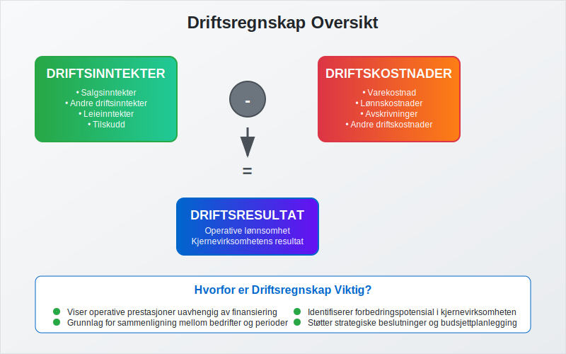
Hovedkomponenter i Driftsregnskapet:
- Driftsinntekter: Alle inntekter fra normal forretningsvirksomhet
- Driftskostnader: Alle kostnader knyttet til den daglige driften
- Driftsresultat: Differansen mellom driftsinntekter og driftskostnader
Struktur av Driftsregnskapet
Et typisk norsk driftsregnskap følger en standardisert struktur som gjør det enkelt å sammenligne bedrifter og analysere utvikling over tid.
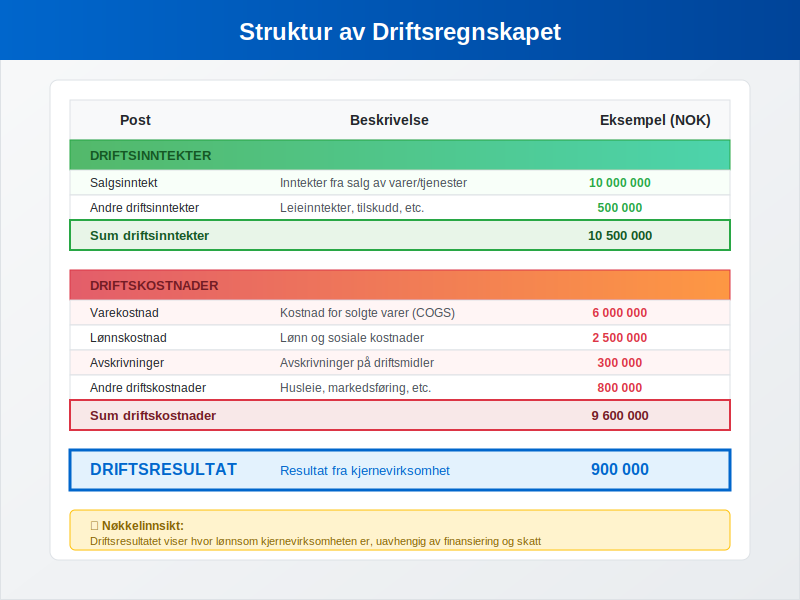
Detaljert Oppbygning:
| Post | Beskrivelse | Eksempel |
|---|---|---|
| Salgsinntekt | Inntekter fra salg av varer/tjenester | 10 000 000 |
| Andre driftsinntekter | Leieinntekter, tilskudd, etc. | 500 000 |
| Sum driftsinntekter | Total operative inntekter | 10 500 000 |
| Varekostnad | Kostnad for solgte varer (COGS) | 6 000 000 |
| Lønnskostnad | Lønn og sosiale kostnader | 2 500 000 |
| Avskrivninger | Avskrivninger på driftsmidler | 300 000 |
| Andre driftskostnader | Husleie, markedsføring, etc. | 800 000 |
| Sum driftskostnader | Total operative kostnader | 9 600 000 |
| Driftsresultat | Resultat fra kjernevirksomhet | 900 000 |
Driftsinntekter - Detaljert Oversikt
Driftsinntekter omfatter alle inntekter som kommer fra bedriftens normale forretningsvirksomhet. Dette er fundamentet for å vurdere bedriftens operative styrke.
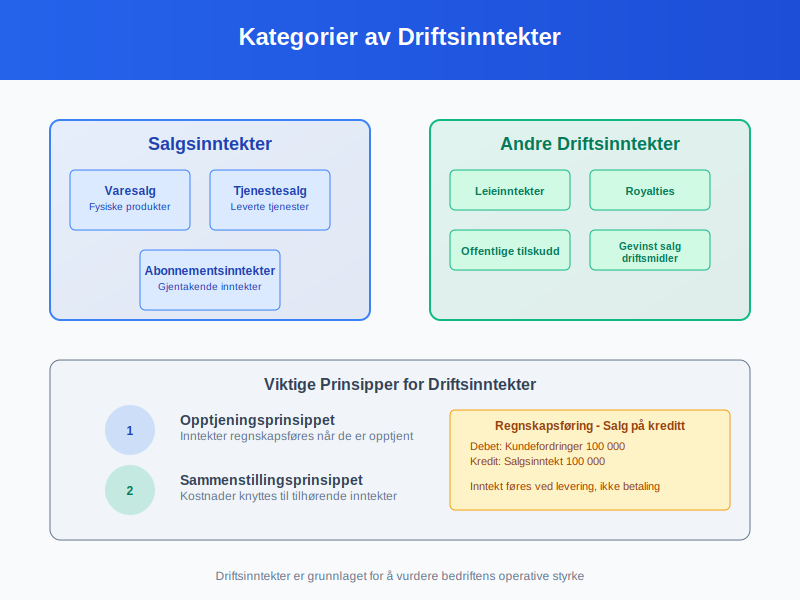
Hovedkategorier av Driftsinntekter:
1. Salgsinntekter
- Varesalg: Inntekter fra salg av fysiske produkter
- Tjenestesalg: Inntekter fra leverte tjenester
- Abonnementsinntekter: Gjentakende inntekter fra abonnementer
2. Andre Driftsinntekter
- Leieinntekter: Fra utleie av lokaler eller utstyr
- Royalties: Fra lisensavtaler og immaterielle rettigheter
- Offentlige tilskudd: Støtte knyttet til drift
- Gevinst ved salg av driftsmidler: Når salgspris > bokført verdi
Regnskapsføring av Driftsinntekter:
Ved salg av varer (100 000 kr):
Debet: Kundefordringer 100 000
Kredit: Salgsinntekt 100 000
Driftskostnader - Komplett Analyse
Driftskostnader er alle kostnader som påløper i forbindelse med den daglige driften av virksomheten. Effektiv kostnadsstyring er avgjørende for lønnsomhet.
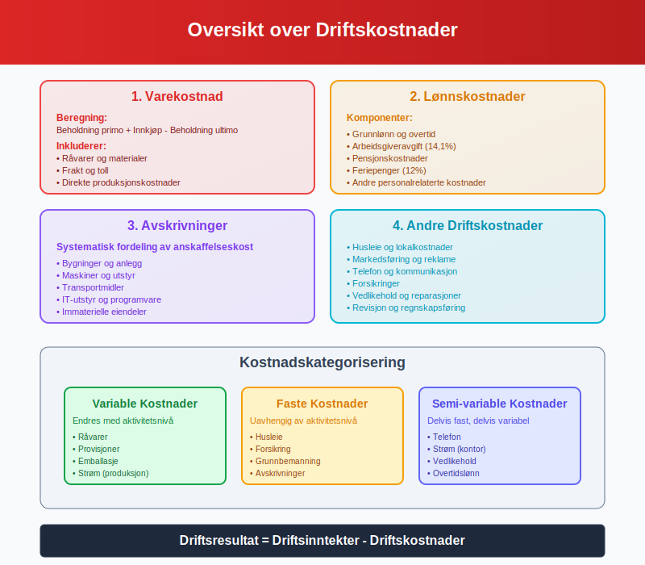
Hovedkategorier av Driftskostnader:
1. Varekostnad
Kostnaden for varer som er solgt i perioden, beregnet som: Varekostnad = Beholdning primo + Innkjøp - Beholdning ultimo
2. Lønnskostnader
- Grunnlønn: Fast lønn til ansatte
- Overtidsbetaling: Ekstra kompensasjon for overtid
- Arbeidsgiveravgift: Avgift på lønn
- Pensjonskostnader: Bidrag til pensjonsordninger
- Andre personalrelaterte kostnader: Kurs, reise, etc.
3. Avskrivninger
Systematisk fordeling av anskaffelseskost for driftsmidler over deres levetid.
4. Andre Driftskostnader
- Husleie og lokalkostnader
- Markedsføring og reklame
- Telefon og kommunikasjon
- Forsikringer
- Vedlikehold og reparasjoner
- Kontorrekvisita
- Revisjon og regnskapsføring
Kostnadskategorisering:
| Kostnadskategori | Beskrivelse | Eksempler |
|---|---|---|
| Variable kostnader | Endres med aktivitetsnivå | Råvarer, provisjoner |
| Faste kostnader | Uavhengig av aktivitetsnivå | Husleie, forsikring |
| Semi-variable kostnader | Delvis fast, delvis variabel | Telefon, strøm |
Driftsresultat - Analyse og Tolkning
Driftsresultatet er kanskje den viktigste enkeltposten i driftsregnskapet da det viser hvor lønnsom kjernevirksomheten er.
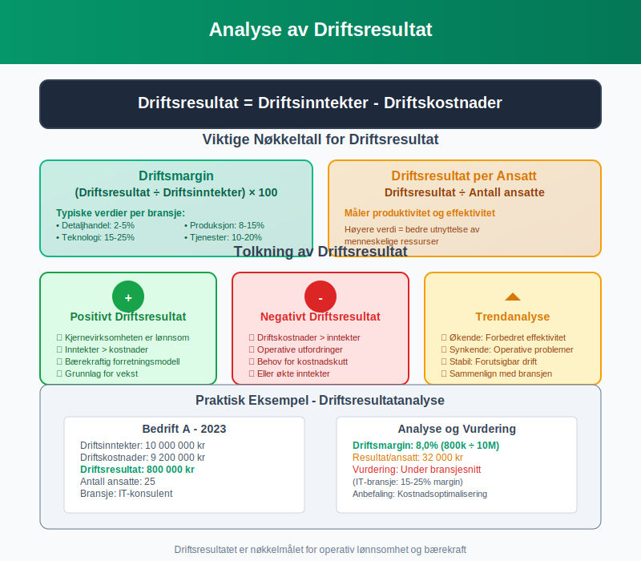
Beregning av Driftsresultat:
Driftsresultat = Driftsinntekter - Driftskostnader
Nøkkeltall for Driftsresultat:
1. Driftsmargin
Driftsmargin = (Driftsresultat ÷ Driftsinntekter) × 100
| Bransje | Typisk Driftsmargin |
|---|---|
| Detaljhandel | 2-5% |
| Teknologi | 15-25% |
| Produksjon | 8-15% |
| Tjenester | 10-20% |
2. Driftsresultat per Ansatt
Driftsresultat per ansatt = Driftsresultat ÷ Antall ansatte
Tolkning av Driftsresultat:
- Positivt driftsresultat: Kjernevirksomheten er lønnsom
- Negativt driftsresultat: Driftskostnadene overstiger inntektene
- Økende driftsresultat: Forbedret operativ effektivitet
- Synkende driftsresultat: Kan indikere operative utfordringer
Forskjellen mellom Driftsregnskap og Totalregnskap
Det er viktig å forstå hvordan driftsregnskapet skiller seg fra det komplette resultatregnskapet.
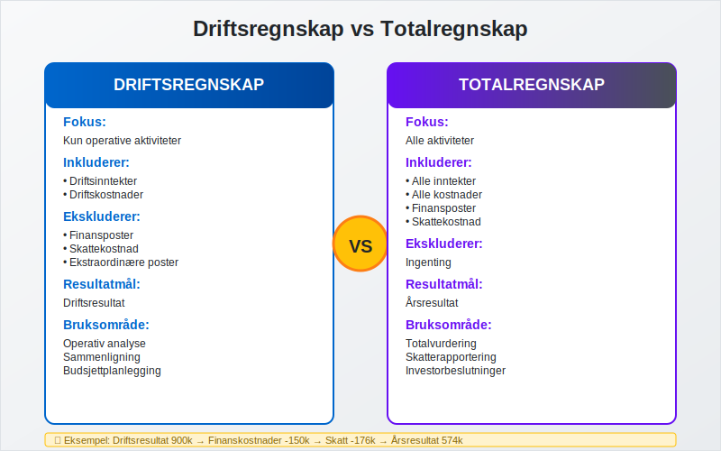
Sammenligning:
| Aspekt | Driftsregnskap | Totalregnskap |
|---|---|---|
| Fokus | Kun operative aktiviteter | Alle aktiviteter |
| Inkluderer | Driftsinntekter og -kostnader | Alle inntekter og kostnader |
| Ekskluderer | Finansposter, skatt, ekstraordinære poster | Ingenting |
| Resultatmål | Driftsresultat | Årsresultat |
| Bruksområde | Operativ analyse | Totalvurdering |
Eksempel på Fullstendig Resultatregnskap:
DRIFTSREGNSKAP:
Driftsinntekter 10 500 000
Driftskostnader -9 600 000
Driftsresultat 900 000
FINANSPOSTER:
Finansinntekter 50 000
Finanskostnader -150 000
Resultat før skatt 800 000
SKATT:
Skattekostnad -176 000
ÅRSRESULTAT 624 000
Praktiske Eksempler fra Norsk Næringsliv
La oss se på hvordan driftsregnskap fungerer i praksis gjennom konkrete eksempler fra ulike bransjer.
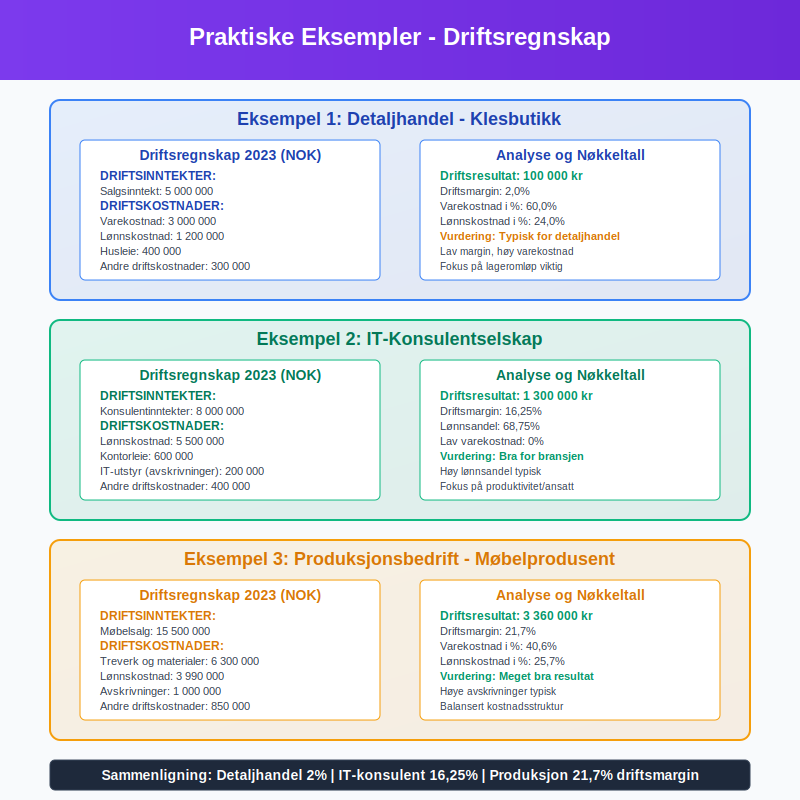
Eksempel 1: Detaljhandel
Situasjon: En klesbutikk med følgende tall for 2023:
| Post | Beløp (NOK) |
|---|---|
| Salgsinntekt | 5 000 000 |
| Varekostnad | 3 000 000 |
| Lønnskostnad | 1 200 000 |
| Husleie | 400 000 |
| Andre driftskostnader | 300 000 |
Beregning:
- Driftsinntekter: 5 000 000
- Driftskostnader: 3 000 000 + 1 200 000 + 400 000 + 300 000 = 4 900 000
- Driftsresultat: 5 000 000 - 4 900 000 = 100 000
- Driftsmargin: (100 000 ÷ 5 000 000) × 100 = 2%
Eksempel 2: IT-Konsulentselskap
Situasjon: Et IT-konsulentselskap med følgende driftsregnskap:
| Post | Beløp (NOK) |
|---|---|
| Konsulentinntekter | 8 000 000 |
| Lønnskostnad | 5 500 000 |
| Kontorleie | 600 000 |
| IT-utstyr (avskrivninger) | 200 000 |
| Andre driftskostnader | 400 000 |
Analyse:
- Driftsresultat: 8 000 000 - 6 700 000 = 1 300 000
- Driftsmargin: 16,25% (meget bra for bransjen)
- Lønnsandel: 68,75% av omsetning (typisk for konsulentbransjen)
Eksempel 3: Produksjonsbedrift
Situasjon: En møbelprodusent med kompleks kostnadsstruktur:
| Kostnadskategori | Detaljerte Poster | Beløp (NOK) |
|---|---|---|
| Driftsinntekter | Møbelsalg | 15 000 000 |
| Reparasjonstjenester | 500 000 | |
| Sum driftsinntekter | 15 500 000 | |
| Varekostnad | Treverk og materialer | 6 000 000 |
| Frakt av råvarer | 300 000 | |
| Lønnskostnader | Produksjonslønn | 3 500 000 |
| Arbeidsgiveravgift | 490 000 | |
| Avskrivninger | Produksjonsmaskiner | 800 000 |
| Bygninger | 200 000 | |
| Andre driftskostnader | Strøm og oppvarming | 400 000 |
| Vedlikehold maskiner | 300 000 | |
| Forsikringer | 150 000 | |
| Sum driftskostnader | 12 140 000 | |
| DRIFTSRESULTAT | 3 360 000 |
Nøkkeltall:
- Driftsmargin: 21,7%
- Varekostnad i % av omsetning: 40,6%
- Lønnskostnad i % av omsetning: 25,7%
Analyse av Driftsregnskapet
Effektiv analyse av driftsregnskapet krever både horisontale og vertikale analyseteknikker.
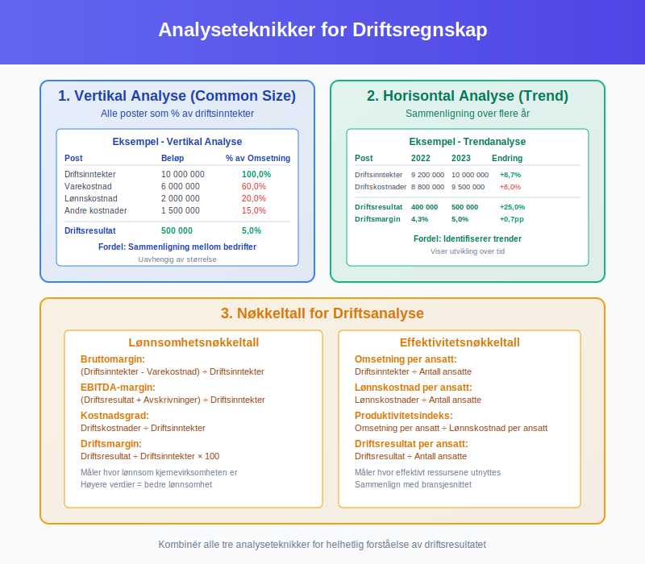
1. Vertikal Analyse (Common Size)
Alle poster uttrykkes som prosent av driftsinntektene:
| Post | Beløp | % av Omsetning |
|---|---|---|
| Driftsinntekter | 10 000 000 | 100,0% |
| Varekostnad | 6 000 000 | 60,0% |
| Lønnskostnad | 2 000 000 | 20,0% |
| Andre driftskostnader | 1 500 000 | 15,0% |
| Driftsresultat | 500 000 | 5,0% |
2. Horisontal Analyse (Trendanalyse)
Sammenligning over flere år for å identifisere trender:
| Post | 2021 | 2022 | 2023 | Endring 22-23 |
|---|---|---|---|---|
| Driftsinntekter | 8 500 000 | 9 200 000 | 10 000 000 | +8,7% |
| Driftskostnader | 8 100 000 | 8 800 000 | 9 500 000 | +8,0% |
| Driftsresultat | 400 000 | 400 000 | 500 000 | +25,0% |
| Driftsmargin | 4,7% | 4,3% | 5,0% | +0,7pp |
3. Nøkkeltall for Driftsanalyse
Lønnsomhetsnøkkeltall:
- Bruttomargin = (Driftsinntekter - Varekostnad) ÷ Driftsinntekter
- EBITDA-margin = (Driftsresultat + Avskrivninger) ÷ Driftsinntekter
- Kostnadsgrad = Driftskostnader ÷ Driftsinntekter
Effektivitetsnøkkeltall:
- Omsetning per ansatt = Driftsinntekter ÷ Antall ansatte
- Lønnskostnad per ansatt = Lønnskostnader ÷ Antall ansatte
- Produktivitetsindeks = Omsetning per ansatt ÷ Lønnskostnad per ansatt
Budsjett og Prognoser for Driftsregnskap
Budsjettering av driftsregnskapet er essensielt for planlegging og kontroll.
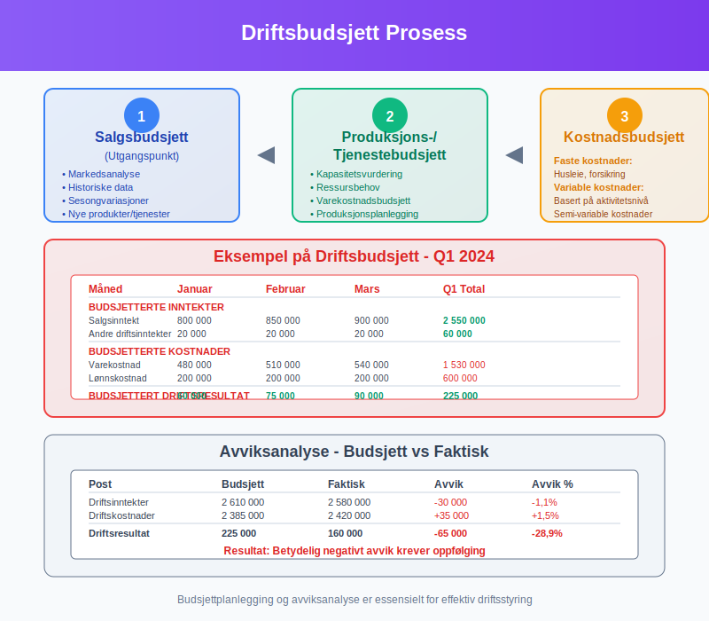
Budsjetterings-prosess:
1. Salgsbudsjett (Utgangspunkt)
- Markedsanalyse og prognoser
- Historiske data og trender
- Sesongvariasjoner
- Nye produkter/tjenester
2. Produksjons-/Tjenestebudsjett
- Kapasitetsvurdering
- Ressursbehov
- Varekostnadsbudsjett
3. Kostnadsbudsjett
- Faste kostnader: Husleie, forsikring, grunnbemanning
- Variable kostnader: Basert på aktivitetsnivå
- Semi-variable kostnader: Kombinasjon av fast og variabel del
Eksempel på Driftsbudsjett:
| Måned | Jan | Feb | Mar | Q1 Total |
|---|---|---|---|---|
| Budsjetterte Inntekter | ||||
| Salgsinntekt | 800 000 | 850 000 | 900 000 | 2 550 000 |
| Andre driftsinntekter | 20 000 | 20 000 | 20 000 | 60 000 |
| Sum inntekter | 820 000 | 870 000 | 920 000 | 2 610 000 |
| Budsjetterte Kostnader | ||||
| Varekostnad | 480 000 | 510 000 | 540 000 | 1 530 000 |
| Lønnskostnad | 200 000 | 200 000 | 200 000 | 600 000 |
| Andre driftskostnader | 80 000 | 85 000 | 90 000 | 255 000 |
| Sum kostnader | 760 000 | 795 000 | 830 000 | 2 385 000 |
| Budsjettert driftsresultat | 60 000 | 75 000 | 90 000 | 225 000 |
Avviksanalyse:
Sammenligning av faktiske tall mot budsjett:
| Post | Budsjett | Faktisk | Avvik | Avvik % |
|---|---|---|---|---|
| Driftsinntekter | 2 610 000 | 2 580 000 | -30 000 | -1,1% |
| Driftskostnader | 2 385 000 | 2 420 000 | +35 000 | +1,5% |
| Driftsresultat | 225 000 | 160 000 | -65 000 | -28,9% |
Regnskapsføring og Dokumentasjon
Korrekt regnskapsføring av driftsposter er avgjørende for pålitelige finansielle rapporter.
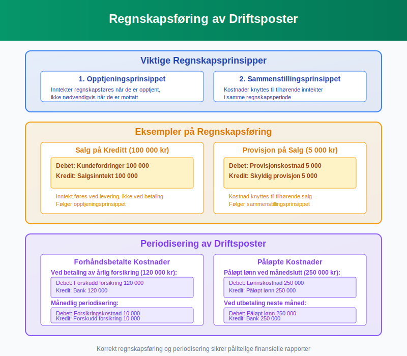
Viktige Regnskapsprinsipper:
1. Opptjeningsprinsippet
Inntekter regnskapsføres når de er opptjent, ikke nødvendigvis når de er mottatt.
Eksempel - Salg på kreditt:
Debet: Kundefordringer 100 000
Kredit: Salgsinntekt 100 000
2. Sammenstillingsprinsippet
Kostnader som er direkte knyttet til inntekter skal regnskapsføres i samme periode.
Eksempel - Provisjon på salg:
Debet: Provisjonskostnad 5 000
Kredit: Skyldig provisjon 5 000
Periodisering av Driftsposter:
Forhåndsbetalte Kostnader (Forskudd):
Ved betaling av årlig forsikring (120 000 kr):
Debet: Forskudd forsikring 120 000
Kredit: Bank 120 000
Månedlig periodisering:
Debet: Forsikringskostnad 10 000
Kredit: Forskudd forsikring 10 000
Påløpte Kostnader:
Påløpt lønn ved månedslutt:
Debet: Lønnskostnad 250 000
Kredit: Påløpt lønn 250 000
Digitalisering og Automatisering
Moderne teknologi har revolusjonert hvordan driftsregnskap håndteres og analyseres.
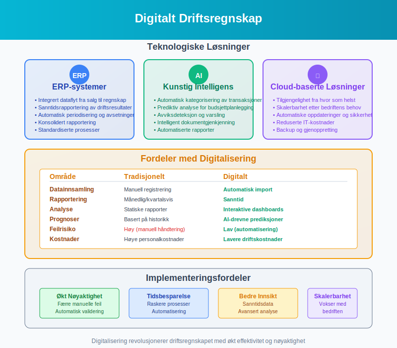
Teknologiske Løsninger:
1. ERP-systemer
- Integrert dataflyt fra salg til regnskap
- Sanntidsrapportering av driftsresultater
- Automatisk periodisering og avsetninger
2. Kunstig Intelligens og Maskinlæring
- Automatisk kategorisering av transaksjoner
- Prediktiv analyse for budsjettplanlegging
- Avviksdeteksjon og varsling
3. Cloud-baserte Løsninger
- Tilgjengelighet fra hvor som helst
- Skalerbarhet etter bedriftens behov
- Automatiske oppdateringer og sikkerhet
Fordeler med Digitalisering:
| Område | Tradisjonelt | Digitalt |
|---|---|---|
| Datainnsamling | Manuell registrering | Automatisk import |
| Rapportering | Månedlig/kvartalsvis | Sanntid |
| Analyse | Statiske rapporter | Interaktive dashboards |
| Prognoser | Basert på historikk | AI-drevne prediksjoner |
| Feilrisiko | Høy (manuell håndtering) | Lav (automatisering) |
Juridiske Krav og Regnskapsstandarder
Norske bedrifter må følge spesifikke krav til regnskapsføring og rapportering av driftsposter.
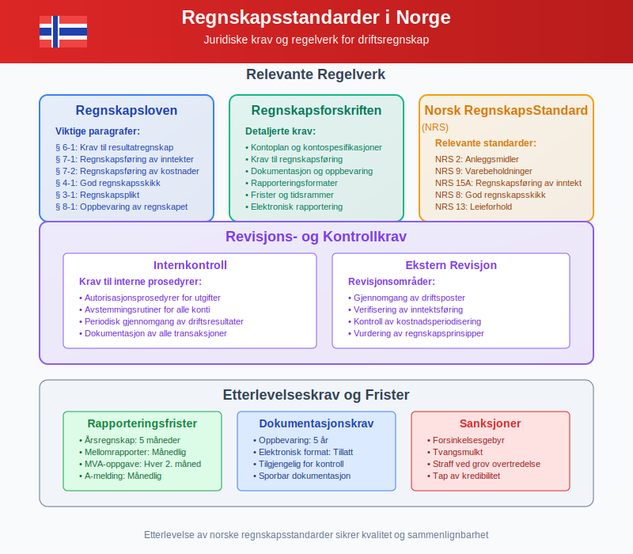
Relevante Regelverk:
1. Regnskapsloven
- § 6-1: Krav til resultatregnskap
- § 7-1: Regnskapsføring av inntekter
- § 7-2: Regnskapsføring av kostnader
2. Regnskapsforskriften
- Detaljerte krav til kontoplan
- Spesifikasjoner for regnskapsføring
- Krav til dokumentasjon og oppbevaring
3. Norsk RegnskapsStandard (NRS)
- NRS 2: Anleggsmidler
- NRS 9: Varebeholdninger
- NRS 15A: Regnskapsføring av inntekt
Revisjons- og Kontrollkrav:
Internkontroll:
- Autorisasjonsprosedyrer for utgifter
- Avstemmingsrutiner for alle konti
- Periodisk gjennomgang av driftsresultater
Ekstern Revisjon:
- Gjennomgang av driftsposter
- Verifisering av inntektsføring
- Kontroll av kostnadsperiodisering
Bransjespesifikke Særtrekk
Ulike bransjer har spesielle karakteristika i sine driftsregnskap som er viktige å forstå.
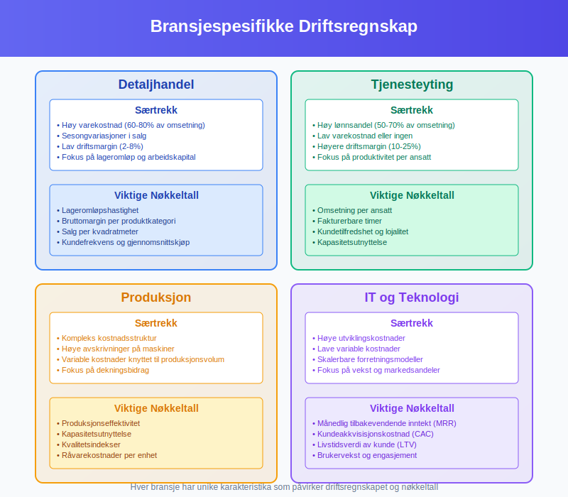
Detaljhandel:
- Høy varekostnad (60-80% av omsetning)
- Sesongvariasjoner i salg
- Lav driftsmargin (2-8%)
- Fokus på lageromløp og arbeidskapital
Tjenesteyting:
- Høy lønnsandel (50-70% av omsetning)
- Lav varekostnad eller ingen
- Høyere driftsmargin (10-25%)
- Fokus på produktivitet per ansatt
Produksjon:
- Kompleks kostnadsstruktur
- Høye avskrivninger på maskiner
- Variable kostnader knyttet til produksjonsvolum
- Fokus på dekningsbidrag
IT og Teknologi:
- Høye utviklingskostnader
- Lave variable kostnader
- Skalerbare forretningsmodeller
- Fokus på vekst og markedsandeler
Vanlige Feil og Fallgruver
Mange bedrifter gjør typiske feil i håndteringen av driftsregnskapet som kan påvirke beslutningsgrunnlaget.
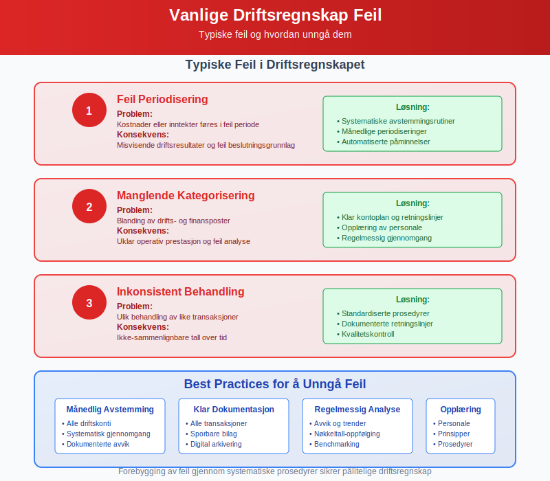
Typiske Feil:
1. Feil Periodisering
- Problem: Kostnader eller inntekter føres i feil periode
- Konsekvens: Misvisende driftsresultater
- Løsning: Systematiske avstemmingsrutiner
2. Manglende Kategorisering
- Problem: Blanding av drifts- og finansposter
- Konsekvens: Uklar operativ prestasjon
- Løsning: Klar kontoplan og retningslinjer
3. Inkonsistent Behandling
- Problem: Ulik behandling av like transaksjoner
- Konsekvens: Ikke-sammenlignbare tall
- Løsning: Standardiserte prosedyrer
Best Practices:
- Månedlig avstemming av alle driftskonti
- Klar dokumentasjon av alle transaksjoner
- Regelmessig analyse av avvik og trender
- Opplæring av personale i regnskapsprinsipper
Fremtidige Trender og Utvikling
Driftsregnskapet vil fortsette å utvikle seg med nye teknologier og forretningsmodeller.
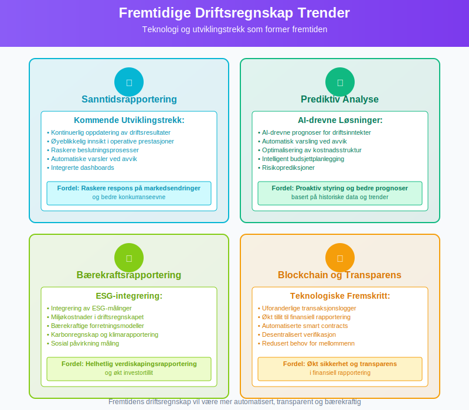
Kommende Utviklingstrekk:
1. Sanntidsrapportering
- Kontinuerlig oppdatering av driftsresultater
- Øyeblikkelig innsikt i operative prestasjoner
- Raskere beslutningsprosesser
2. Prediktiv Analyse
- AI-drevne prognoser for driftsinntekter
- Automatisk varsling ved avvik
- Optimalisering av kostnadsstruktur
3. Bærekraftsrapportering
- Integrering av ESG-målinger
- Miljøkostnader i driftsregnskapet
- Bærekraftige forretningsmodeller
4. Blockchain og Transparens
- Uforanderlige transaksjonslogger
- Økt tillit til finansiell rapportering
- Automatiserte smart contracts
Konklusjon
Driftsregnskapet er et fundamentalt verktøy for å forstå og styre bedriftens operative prestasjoner. Ved å fokusere på kjernevirksomheten gir det ledelsen og interessenter et klart bilde av hvor lønnsom den daglige driften er.
Viktige Takeaways:
- Driftsregnskapet skiller operative aktiviteter fra finansielle
- Driftsresultatet er nøkkelmålet for operativ lønnsomhet
- Systematisk analyse av driftsposter gir verdifull innsikt
- Korrekt regnskapsføring er essensielt for pålitelige rapporter
- Digitalisering forbedrer nøyaktighet og tilgjengelighet
Ved å mestre driftsregnskapet kan bedrifter ta bedre strategiske beslutninger, optimalisere kostnadsstrukturen og sikre langsiktig lønnsomhet. Det er ikke bare et regnskapsmessig verktøy, men en kritisk komponent i moderne bedriftsledelse.
For bedrifter som ønsker å forbedre sin finansielle styring, er en grundig forståelse av driftsregnskapet helt avgjørende for suksess i dagens konkurranseutsatte marked.